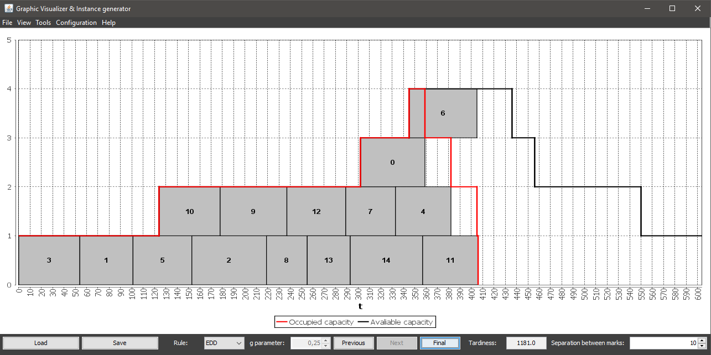

The Instance Generator and Graphic Visualizer is an application that allows users to handle instances of the scheduling on single machine with variable capacity problem
This tool allows to:
The application is fully internationalized, avaliable in two languages: spanish and english.